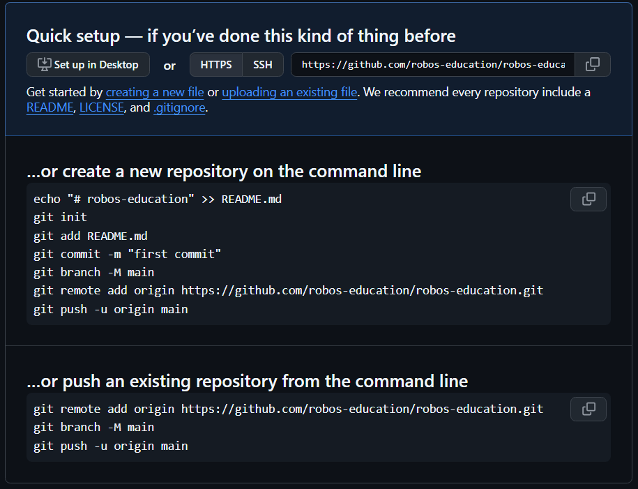
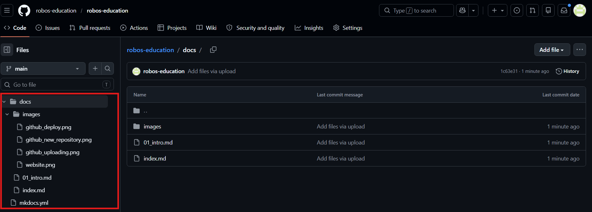

Git 기초 · 배포
지금까지 로컬 서버(mkdocs serve)로 내 컴퓨터에서만 페이지를 확인했다.
이번 chapter에서는 파일을 GitHub에 올리고 인터넷에 공개(게시)하는 방법을 익힌다.
Repository 만들기
GitHub Pages는 repository의 이름을 사용자 이름으로 만들면
따라서 우리도 사용자 이름과 같은 repository를 만든다.
repository 이름 규칙:
<username>.github.io
예를 들어 GitHub의 username(로그인 메일 계정을 말하는 것이 아니다.)이 hong-gildong이면 hong-gildong.github.io으로 web site의 주소가 설정된다.
⚠️ 만일 이름이 정확히 일치하지 않으면 GitHub Pages는 https://hong-gildong.github.io/repository_name과 같은 주소를 사용하게 된다.
생성 순서
- GitHub에 로그인 -> 오른쪽 위
+버튼 -> New repository 클릭 - General -> Repository name에
<username>.github.io입력 - Configuration -> Choose visibility -> Public 선택 (반드시 Public이어야 Pages가 작동한다)
- Configuration -> Add README -> Add a README file 체크 ✓ (빈 repository 방지)
- Configuration -> Add .gitignore -> no .gitignore (Git이 무시할 파일 목록)
- Configuration -> Add license -> No license (공개 파일의 사용 조건을 명시하는 파일)
- Create repository 클릭
- 아래와 같은 안내 page가 나온다.

파일 upload
local에서 작성했던 MkDocs 설정 파일을 GitHub에서 직접 upload한다. 작성한 파일이 없다면 Creating new file을 이용한다.
폴더 구조 확인
upload 전에 MkDocs 프로젝트 폴더 구조를 확인한다.
my-tech-log/
├── docs/
│ └── index.md
└── mkdocs.yml
GitHub에는 이 폴더 전체를 올린다.
웹에서 파일 upload
- 방금 만든 repository 페이지로 이동한다
- Add file -> Upload files 클릭
docs/폴더와mkdocs.yml파일을 드래그하거나 선택한다- 하단 Commit changes에서 적당한 메모를 작성한 후 Commit changes 버튼 클릭
폴더째로 드래그하면 폴더 구조 그대로 올라간다.

mkdocs.yml 수정(local에서 수정한 후 uploading하는 것을 권장)
mkdocs의 설정파일을 github의 web site에 맞게 수정한다. repository -> code -> mkdocs.yml -> edit this file(연필 아이콘) -> 수정 -> commit
site_name: My Tech Log
site_url: https://<username>.github.io
설명:
파일을 올리고 나면 GitHub repository에 변경 내역이 기록된다.
이 기록을 관리하는 시스템이 Git이다.
Git은 파일이 언제, 무엇이, 어떻게 바뀌었는지 추적한다.
GitHub는 Git으로 관리되는 파일을 인터넷에서 저장하고 공유하는 서비스다.
파일을 올리는 과정은 세 단계로 이루어진다.
| 단계 | 이름 | 의미 |
|---|---|---|
| 1 | add | 기록할 파일을 선택한다 |
| 2 | commit | "이 상태로 저장"이라는 메모를 남긴다 |
| 3 | push | GitHub 서버로 전송한다 |
웹에서 Upload files -> Commit changes를 클릭하면 이 세 단계가 한 번에 처리된다.
Commit 메시지
commit할 때는 어떤 변경인지 설명하는 메시지를 남긴다.
나중에 기록을 되돌아볼 때 유용하기 때문에 짧고 명확하게 쓰는 습관을 갖는 것이 좋다.
GitHub Actions 설정
파일을 upload하는 것만으로는 web site가 만들어지지 않는다. Markdown 파일을 HTML로 변환하는 작업이 필요하다.
GitHub Actions는 이 작업을 자동으로 처리해 준다.
"파일을 push하면 자동으로 빌드 + 배포"하도록 설정할 수 있다.
내가 파일을 올린다 (push)
↓
GitHub Actions가 감지한다
↓
Markdown -> HTML 변환 (build)
↓
GitHub Pages에 배포한다
↓
사이트 업데이트 완료
Actions는 .github/workflows/ 폴더 안에 .yml 파일을 넣어서 설정한다.
workflow 파일 만들기
- repository 페이지에서 Add file(+) -> Create new file 클릭
- 파일 이름 입력란에
.github/workflows/deploy.yml입력(확장자가 반드시 yml이어야 한다.)
(슬래시를 입력하면 폴더가 자동으로 생성된다) - 아래 내용을 붙여넣는다
# workflow 이름 GitHub Actions tab에 표시된다.
name: Deploy MkDocs
# 작업
on:
push:
branches:
- main # 배포를 트리거할 branch name
# GitHub Actions가 현재 repository에 Write 권한 부여(Actions에서 설정할 수도 있다.)
permissions:
contents: write
# 수행할 작업 설정
jobs:
deploy:
runs-on: ubuntu-latest # 작업이 실행되는 OS
steps:
- uses: actions/checkout@v4 # source code 설정
- uses: actions/setup-python@v5 # python 환경 설정(MkDocs 실행을 위해 필요)
with:
python-version: '3.x'
- run: pip install mkdocs-material # 필요한 Library 설치
- run: mkdocs gh-deploy --force # HTML을 빌드하고 GitHub Pages에 배포
- 오른쪽 위 Commit changes 클릭 -> 메시지 확인 후 Commit changes
workflow 파일 설명
| 항목 | 의미 |
|---|---|
on: push: branches: main |
main branch에 push가 발생하면 실행한다 |
permissions: contents: write |
Actions가 repository에 파일을 쓸 수 있도록 권한을 부여한다 |
runs-on: ubuntu-latest |
GitHub 서버(리눅스)에서 실행한다 |
actions/checkout@v4 |
repository 파일을 가져온다 |
actions/setup-python@v5 |
Python을 설치한다 |
pip install mkdocs-material |
MkDocs와 테마를 설치한다 |
mkdocs gh-deploy --force |
빌드하고 Pages에 배포한다 |
GitHub Pages 설정
Actions가 배포를 완료하려면 Pages 설정이 맞아야 한다.
- repository 페이지 -> Settings 탭
- 왼쪽 메뉴에서 Pages 클릭
- Source를
Deploy from a branch로 설정 - Branch를
gh-pages/root로 설정 - Save 클릭
Actions 실행 확인
파일을 commit하면 Actions가 자동으로 시작된다.
- repository 페이지 -> Actions 탭 클릭
- 가장 위에 있는 workflow 항목 클릭
- 진행 상황을 실시간으로 확인할 수 있다
| 아이콘 | 상태 |
|---|---|
| 🟡 노란 원 | 실행 중 |
| ✅ 초록 체크 | 성공 |
| ❌ 빨간 X | 실패 |
실패한 경우 항목을 클릭하면 어떤 단계에서 오류가 났는지 확인할 수 있다.
브라우저에서 확인
Actions가 성공하면 1~2분 후 Web Browser에서 접속한다.
https://<username>.github.io
이후에는 파일을 수정해서 upload만 하면 Actions가 자동으로 사이트를 업데이트한다.
앞으로의 작업 흐름
① VSCode에서 Markdown 파일 작성 · 수정
↓
② GitHub 웹에서 Upload files -> Commit changes
↓
③ Actions가 자동으로 빌드 · 배포
↓
④ 브라우저에서 확인
참고: 터미널로 배포하는 방법
터미널(명령줄)을 사용하면 웹 업로드 없이 더 빠르게 파일을 올릴 수 있다.
Git과 VSCode 터미널에 익숙해지면 도전해 본다.
Git 설치 및 초기 설정
Git이 설치되어 있지 않다면 https://git-scm.com 에서 설치한다.
# 아래 설정은 반드시 필요하지 않다.
git config --global user.name "홍길동"
git config --global user.email "your@email.com"
GitHub 연결하고 upload 되어 있는 자료 가져오기
VSCode에서 프로젝트 폴더를 연다.(File -> Open Folder)
git clone https://github.com/<username>/<username>.github.io.git . # 현재 폴더로 복사하기
마지막에 .을 생략하면 현재 폴더에 repository 폴더를 만들고 복사한다. git 설정도 모두 복사한다.
clone 실행 없이 빈 폴더에서 시작하는 경우
git init # 초기화
git remote add origin https://github.com/<username>/<username>.github.io.git # 원격 repository 주소를 origin으로 등록
git pull origin main # origin main branch 내용 가져오기
파일 upload
git add .
git commit -m "커밋 메시지" # -m은 메시지와 함께 commit하는 옵션
git push -u origin main # -u는 origin main을 등록하는 옵션
이후에는 git push만 입력하면 된다.
Actions가 설정되어 있으면 push 후 자동으로 빌드·배포가 진행된다.
처음 push가 실행될 때 로그인 절차가 진행된다.
session이 끝날 때까지 로그인이 유지되기 때문에 공용 PC라면 로그인 정보를 지우는 것이 필요하다.
공용 PC에서 로그인 정보 지우기
학교 컴퓨터 등 여러 사람이 사용하는 PC에서 작업한 경우, 작업 후 반드시 로그인 정보를 삭제한다.
Windows:
제어판 -> 자격 증명 관리자 -> Windows 자격 증명 -> github.com 항목 -> 제거
또는 Terminal에서
control /name Microsoft.CredentialManager # Windows 자격 증명 관리자 열기
다음 push 시 로그인 창이 다시 뜨면 정상적으로 삭제된 것이다.